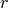
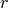
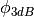

|
A Discrete-Event Network Simulator
|
Models |
|
|
A Discrete-Event Network Simulator
|
Models |
The Antenna module provides:
- a new base class (AntennaModel) that provides an interface for the modeling of the radiation pattern of an antenna;
- a set of classes derived from this base class that each models the radiation pattern of different types of antennas.
The AntennaModel uses the coordinate system adopted in [Balanis] and
depicted in Figure Coordinate system of the AntennaModel. This system
is obtained by traslating the cartesian coordinate system used by the
ns-3 MobilityModel into the new origin which is the location
of the antenna, and then transforming the coordinates of every generic
point  of the space from cartesian coordinates
into spherical coordinates
.
The antenna model neglects the radial component , and
only considers the angle components . An antenna
radiation pattern is then expressed as a mathematical function
that returns the
gain (in dB) for each possible direction of
transmission/reception. All angles are expressed in radians.
of the space from cartesian coordinates
into spherical coordinates
.
The antenna model neglects the radial component , and
only considers the angle components . An antenna
radiation pattern is then expressed as a mathematical function
that returns the
gain (in dB) for each possible direction of
transmission/reception. All angles are expressed in radians.
Coordinate system of the AntennaModel
In this section we describe the antenna radiation pattern models that are included within the antenna module.
This antenna radiation pattern model provides a unitary gain (0 dB) for all direction.
This is the cosine model described in [Chunjian]: the antenna gain is determined as:
where is the azimuthal orientation of the antenna (i.e., its direction of maximum gain) and the exponential
determines the desired 3dB beamwidth .
A major difference between the model of [Chunjian] and the one implemented in the class CosineAntennaModel is that only the element factor (i.e., what described by the above formulas) is considered. In fact, [Chunjian] also considered an additional antenna array factor. The reason why the latter is excluded is that we expect that the average user would desire to specify a given beamwidth exactly, without adding an array factor at a latter stage which would in practice alter the effective beamwidth of the resulting radiation pattern.
This model is based on the parabolic approximation of the main lobe radiation pattern. It is often used in the context of cellular system to model the radiation pattern of a cell sector, see for instance [R4-092042a] and [Calcev]. The antenna gain in dB is determined as:
where is the azimuthal orientation of the antenna (i.e., its direction of maximum gain), is its 3 dB beamwidth, and is the maximum attenuation in dB of the antenna.
| [Balanis] | C.A. Balanis, “Antenna Theory - Analysis and Design”, Wiley, 2nd Ed. |
| [Chunjian] | (1, 2, 3) Li Chunjian, “Efficient Antenna Patterns for Three-Sector WCDMA Systems”, Master of Science Thesis, Chalmers University of Technology, Göteborg, Sweden, 2003 |
| [Calcev] | George Calcev and Matt Dillon, “Antenna Tilt Control in CDMA Networks”, in Proc. of the 2nd Annual International Wireless Internet Conference (WICON), 2006 |
| [R4-092042a] | 3GPP TSG RAN WG4 (Radio) Meeting #51, R4-092042, Simulation assumptions and parameters for FDD HeNB RF requirements. |